Цилиндры
Для создания камер двигателя применяются установленные соосно цилиндры (роторы). Для удобства описания я буду называть их "внешний цилиндр (ротор)" и "внутренний цилиндр (ротор)" - по способу установки валов относительно друг друга. Цилиндры имеют полые валы. Лопасти установленные в цилиндрах одного цилиндра упираются торцами в стенки второго цилиндра. Таким образом образуются замкнутые камеры внутри соединенных цилиндров. Как показано на каритнках цилиндры соединяются с перекрытием ("в нахлест"). Большая площадь контакта позволяет надежно изолировать камеры и не допускать прорыва газов.
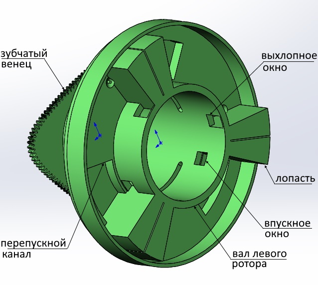
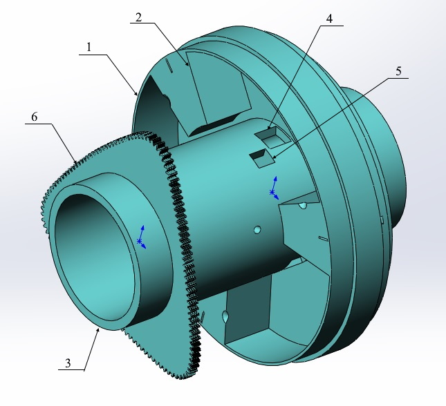
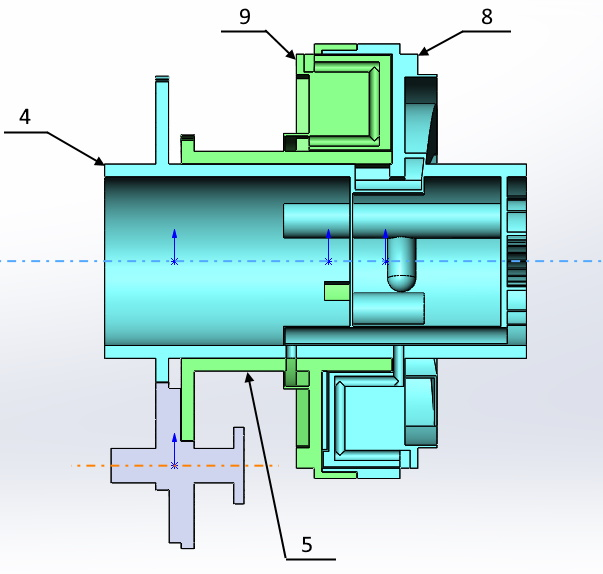
В самих цилиндрах нет подвижных деталей. Они совершают только вращательные движения друг относительно друга.
Передача
Основой зубчатой передачи является зубчатый вал со смещенными шестернями. Так как по виду он сильно напоминает обычный коленвал - буду называть его зубчатым коленвалом (ЗКВ).
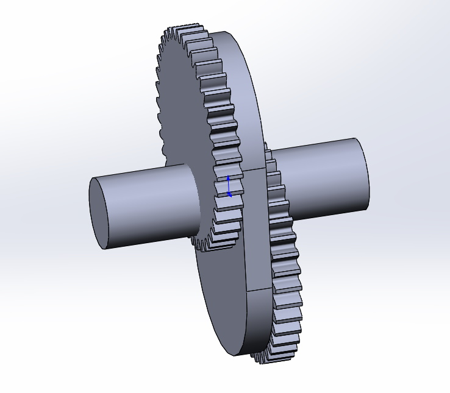
На полых валах цилиндров установлены зубчатые венцы. Форма эитх венцов может быть различной. В данном примере - венцы треугольные так как одни полный оборот цилиндр совершает за три оборота ЗКВ. Но они могут иметь любую n-угольную форму. Всего три подвижных детали (2 цилиндра и ЗКВ) устанавливаются в корпус. Цилиндры своими зубчатыми венцами входят в зацепление с валом (ЗКВ).
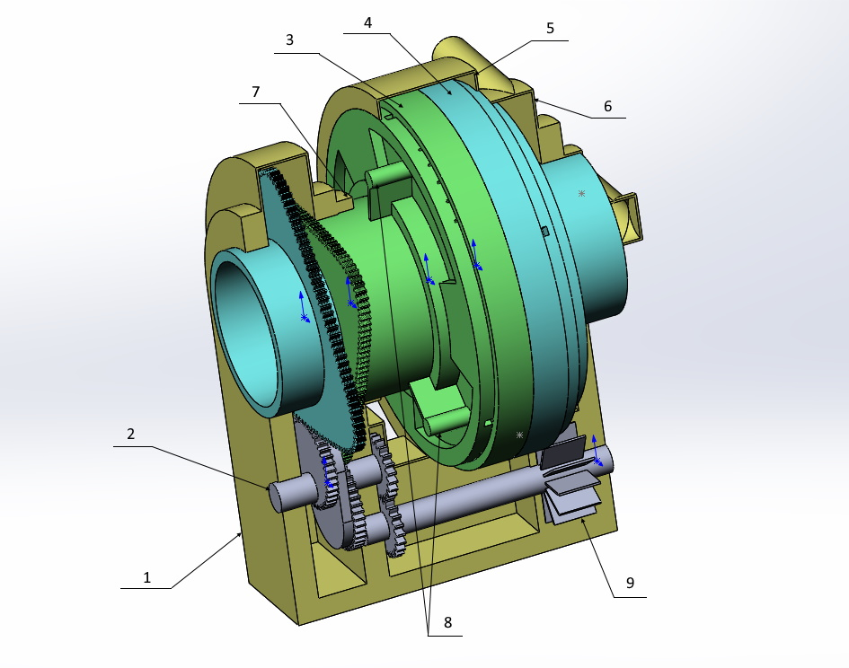
В приведенном примере цилиндр совершающий малый ход проворачивается на 30 градусов, а совершающий большой ход на 90. Таким образом относительный ход лопастей (разница большого и малого хода цилиндров) составляет 60 градусов за один оборот ЗКВ. Таким образом средние скорости лопастей совершающих малый и большой ход находится в соотношении 1:2.
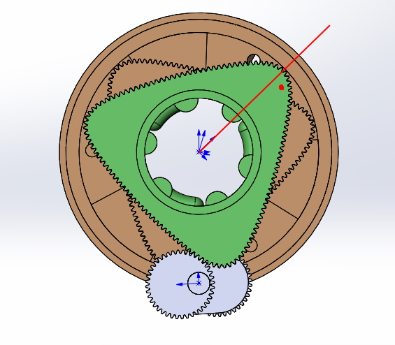
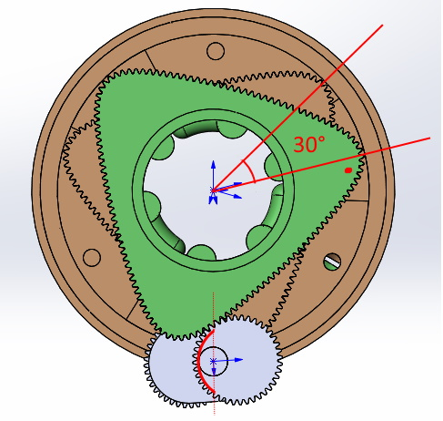
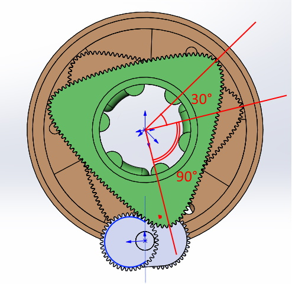
Газораспределение
Валы цилидров сделаны полыми. Через валы подается горючая смесь и отводится выхлоп. С этой целью в них выполенны окна для подачи горючей смеси и для выхлопа. В процессе работы окна совмещеаются или перекрываются телом соседнего вала. Получается скользящий клапан. Относительное смещение окон внутреннего и внешнего роторов позволяет создать механизм газораспределения. Схема газораспределения такая же как и в обычном двухтактном двигателе. Только в качестве картера в котором поршень зжимает горючую смесь при движении вниз выступает часть камер (половина камер) образованных лопастями и цилиндрами.
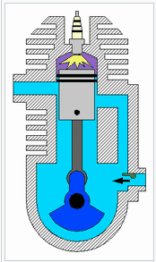
взято тут
Таким образом в половине камер всегда происходит сгорание (горячие камеры), а в другой половине камер (холодные камеры) - всегда всасывание и зжатие горючей смеси для её прокачки в горячие камеры. Цикл двигателя выглядит следующим образом (представим что двигатель уже запущен и работает):
1. В горячих камерах произошло воспламенение горючей смеси и начинается рабочий ход. В холодных камерах завершилось всасывание новой порции горючей смеси. Выхлопной канал в горячих камерах закрыт, а впускной канал в холодных камерах открыт.
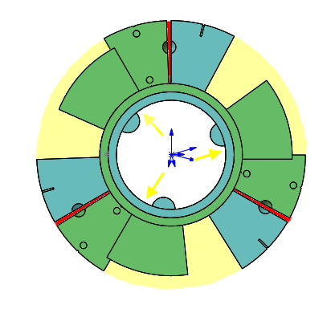
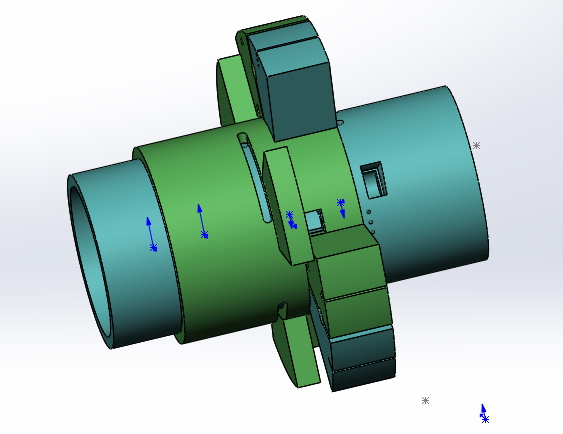
2. Двигатель совершает рабочий ход и относительное положение цилиндров меняется. В холодных камерах закрывается впускной канал и начинается зжатие горючей смеси (как в картере поршнвого двухтактного двигателя). Далее достигается положение цилиндров при котором открывается выхлопной канал. Газ из горячих камер через выхолопные окна и выхлопной канал попадает на выхлопные патрубки направленные против вращения роторов. На выхлопных патрубках создается реактивная тяга и вхлоп тем самым совершает дополнительную работу.
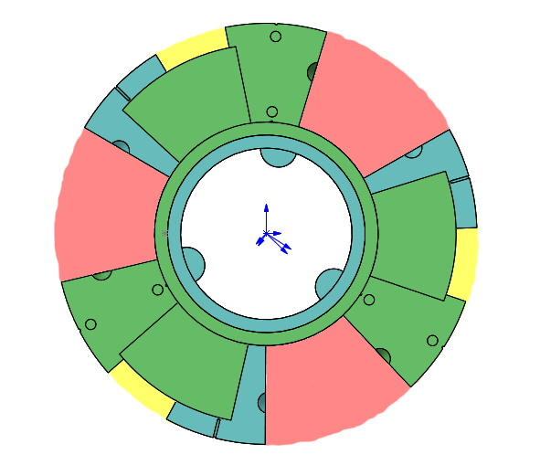
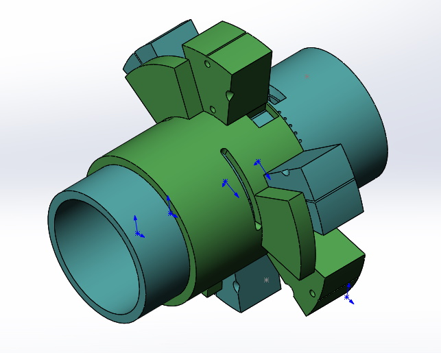
3. К моменту перед открытием перекиндного канала выхлоп в горячих камерах уже произошел. Выхлопной канал полностью открыт и давление в горячих камерах близкое к атмосферному. В холодных камерах сжата горючая смесь.
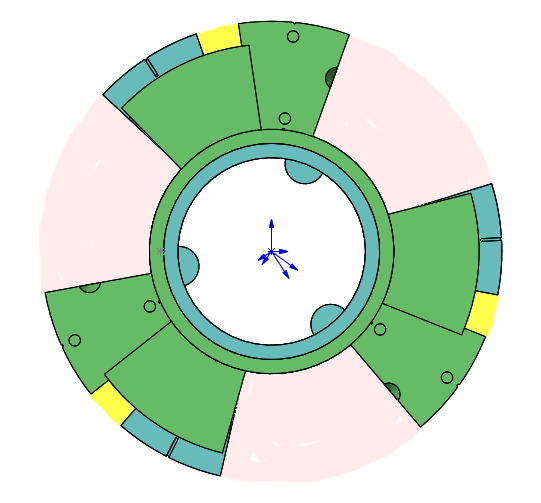
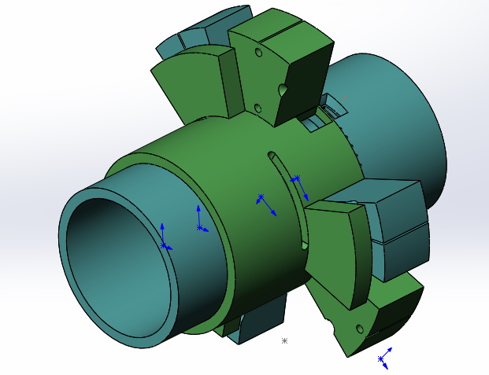
4. Далее открывается перекидной канал и сжатая горючая смесь из холодных камер через перекидной канал вытесняется в горячие камеры. Роторы достигают положения равных угловых скоростей и с этого момента опорный и ведущий роторы меняются ролями.
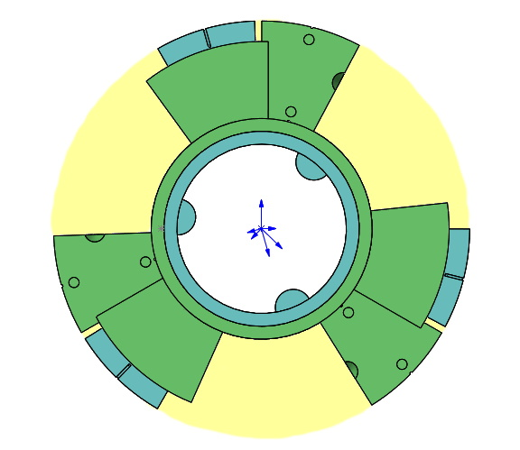
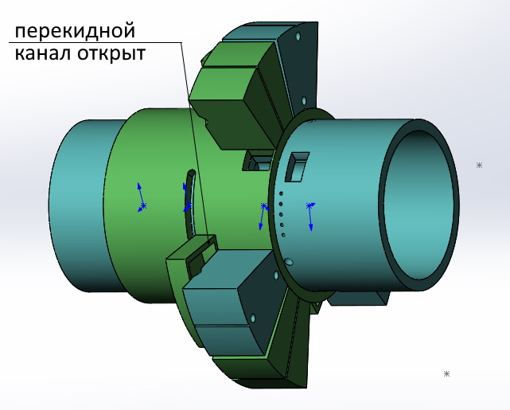
5. При сближении лопастей горячих камер сначала закрывается перекидной канал и начинает закрываться выхлопной канал. В холодных камерах после закрытия перекидного канала начинает нарастать разрежение.
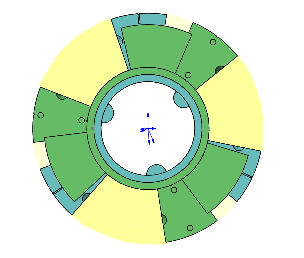
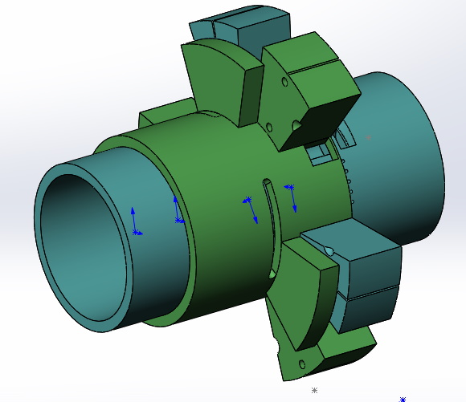
6. После полного закрытия выхлопного канала и горячие и холодные камеры становятся герметичными. При дальнейшем вращении роторов в горячих камерах происходит сжатие горючей смеси, а в холодных камерах нарастает разрежение.
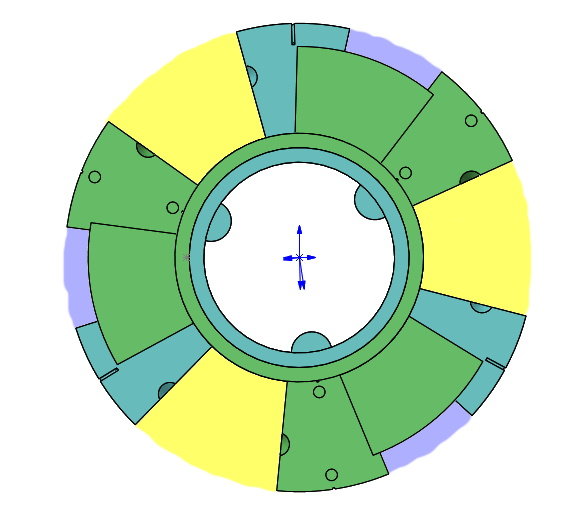
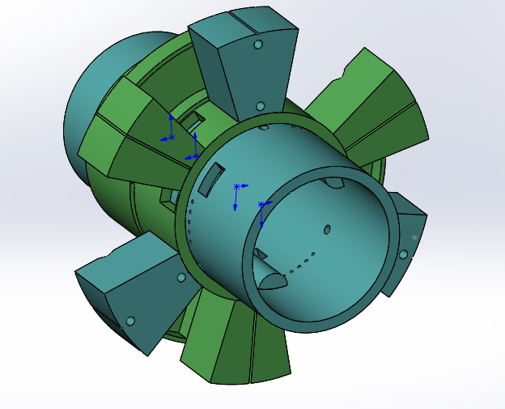
7. Роторы достигают положения при котором открывается канал подачи горючей смеси. За счет разрежения в холодных камерах новая порция горючей смеси заполняет их. В горячих камерах продолжается сжатие.
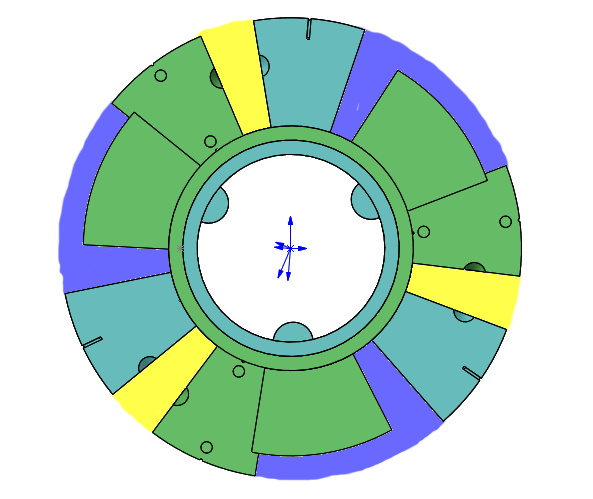
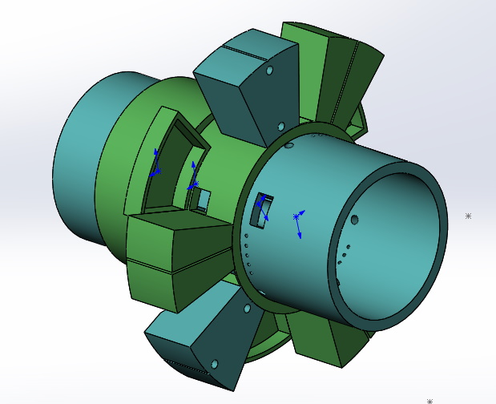
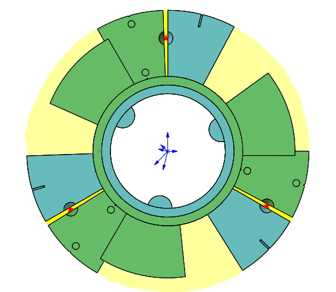
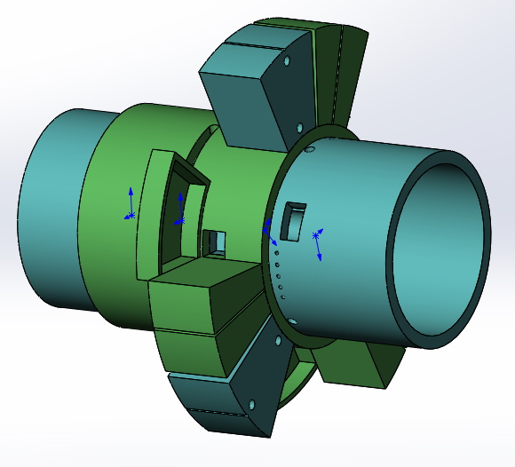
Направленный выхлоп
Так как оба цилиндра вращаются в одном направление целесообразно направить выхлоп в противоположном направлении. Это позволяет использовать часть энергии выхлопа без применения дополнительных устройств (используя только статичные патрубки). Выхлоп - это газ с температурой около 800 С° и давлением около 10 атм. Вполне подходящий для использования ресурс.Охлаждение и смазка
На первый взгляд двухроторная конструкция - это просто обычный двухтактный двигатель "свернутый в кольцо". Но особенности конструкции придают ему свойства не достижимые для поршневого варианта: - направленный выхлоп позволяет использовать часть энергии выхлопа для повышения полезной работы двигателя без дополнительных утройств - центробежное охлаждение позволяет интенсивно охлаждать все части двигателя включая лопасти (охлаждать поршни в обычном ДВС сложно). Это позволяет сжигать больше топлива (или что то калорийнее бензина) в единицу времени. Т.е. позволяет повышать мощьность и "оборотистость" двигателя. - все части можно хорошо смазывать. Нет необходимости добавлять масло в бензин (как это сейчас делается для двухтактных ДВС). Сгорание будет чище. Кроме того, большинство контактов деталей - концентрические. При подведении смазки они будут работать как подшипники скольжения снижая потери на трение. - Все усилия и колебания возникающие при ускорениях роторов "замкнуты" по кругу. Это снижает вибрации позволяя делать высокооборотистые двигатели.